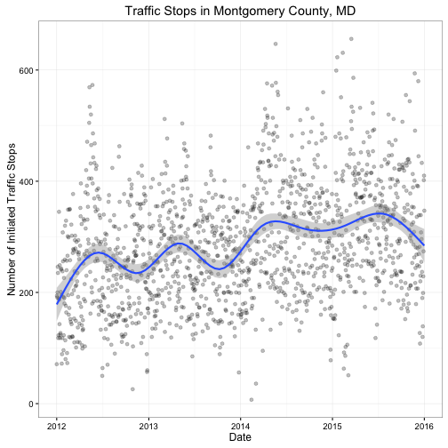
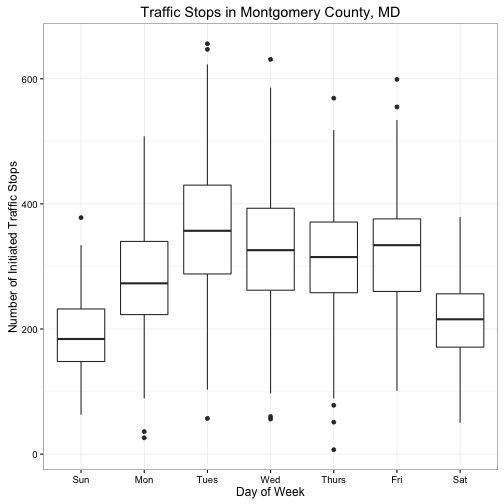
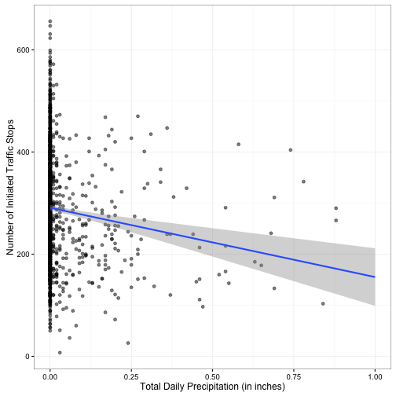
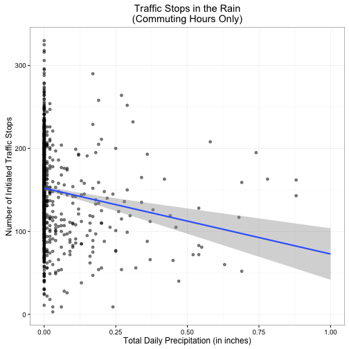
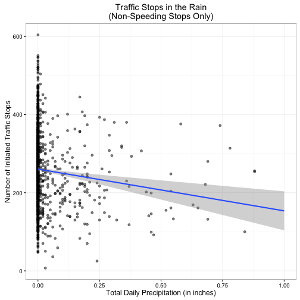

Do Cops Pull Over Fewer People in the Rain?
So I enjoy reading Deadspin on occasion, sometimes checking out Drew Magary’s Funblog where he answers reader questions - usually few directly pertain to sports. A couple weeks ago, one reader wrote in asking:
If you were a cop, would you ever pull someone over in the rain (presuming you aren’t a Seattle cop)?
This got me wondering: are cops less likely to pull a person over in the rain? Magary makes the argument that he would not; in not quite the same words, the basic argument is that cops are lazy and don’t want to deal with the trouble of conducting a traffic stop in the rain - they don’t want to get wet. But is this the norm? Or do the police pull over vehicles regardless of exterior forces such as the weather?
In order to test this argument, first we need data on traffic stops. Montgomery County, Maryland publishes an open dataset of all traffic stops initiated within the county. While not generalizable to all police forces, this at least gives us the opportunity to see if our hypothesis holds up to a basic test. Furthermore, the data is relatively comprehensive with records dating back to 2012. Combine this with historical weather data from the region, and we can begin to unpack this puzzle.
I downloaded the Montgomery County data – all tickets issued from 2012-15 – and combined it with daily weather data from WeatherUnderground. Since the police can issue multiple tickets for the same stop, I converted the data so that each row indicates a single stop, rather than a ticket. I used daily temperature and precipitation readings from the Frederick Municipal Airport which is the closest major weather station to the county. In an ideal world we would combine real-time precipitation readings measured at the closest point to the actual stop, at least at a ZIP code-level. Unfortunately, I could not find historical data at that level. So we proceed with our airport readings.
The Data

The first thing to note about traffic stops is that the total number of stops per day is both rising gradually as well as seasonal. The overall trend in stops is increasing over the years, possibly from a rise in population, traffic, or increased pressure to issue tickets and generate revenue. However there is also a seasonal trend – traffic stops peak in the summer and drop in the winter. This could be driven by the police not wanting to get out of their heated patrol cars in the winter to initiate traffic stops, however I think the real reason is that there is simply more traffic during the summer. Which is something we need to consider moving forward, that traffic stops are not just a function of police behavior but also driver behavior. If motorists adjust their driving behavior, then that may also influence the frequency of traffic citations.

Looking at which day of the week most stops are made, we see a rather obvious pattern - more traffic stops occur on weekdays than the weekend. Because there is more traffic during the work week, we should expect to see more stops during that time period.
Accounting for Precipitation

So does rain effect traffic stop frequency? Well, maybe. Above is a basic comparision of the relationship between daily precipitation and the number of initiated traffic stops. There is a slight linear relationship apparent: as precipitation increases, the number of traffic stops declines. We can also be pretty confident out to about 1 inch of precipitation, although our range of uncertainty increases because of fewer datapoints available.
Open and shut case, right? Well, not quite. If the police don’t want to stop vehicles in the rain, it also stands to reason that drivers don’t want to make trips in the rain if they can avoid it. By staying off the roads, there will be fewer potential cars for the police to stop. Any decline in stops associated with precipitation may not be the fault of the police, but instead the public.
One way to get around this conundrum is by focusing on instances when drivers are least likely to change their behavior, regardless of precipitation. More bluntly, when must drivers go out on the roads? During rush hour commutes. Regardless of the rain, people who drive to work must still go out on the roads. By only examining weekday rush hours, we can isolate the time periods where drivers should have the least impact on traffic stops.

Here, our original trend continues to hold up. As precipitation increases, traffic stops decrease. While not rock-solid proof that police are less likely to stop drivers in the rain, it does suggest this behavior may occur. The other big confounder is that drivers may also change their behavior in the rain, not only by staying off the roads but by driving more cautiously. If that was the case, even with the same volume of traffic and the same probability the police initiating a traffic stop the total number of stops would decline in the rain.
So let’s filter out the speeding violations and see if the trend still holds. Because the dataset has 942 different unique violations of the Maryland traffic code, I did not attempt to look up each specific section of the code to determine which are speeding-related. Instead, I used the Description field of the data (this includes a text summary of the reason for the stop) and filtered out any stops which included “EXCEEDING THE POSTED SPEED LIMIT” as one of the violations.

Surprise surprise, we still get the same basic pattern. As precipitation increases, non-speeding related stops still decrease.
Seems to be decent support for the theory that cops are less likely to pull people over in the rain. Still, even if they’re less likely to stop you, don’t be stupid – don’t drive like an idiot in the rain.